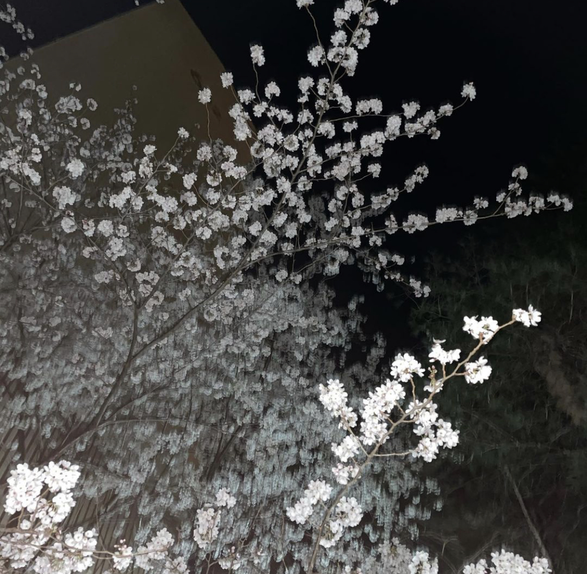
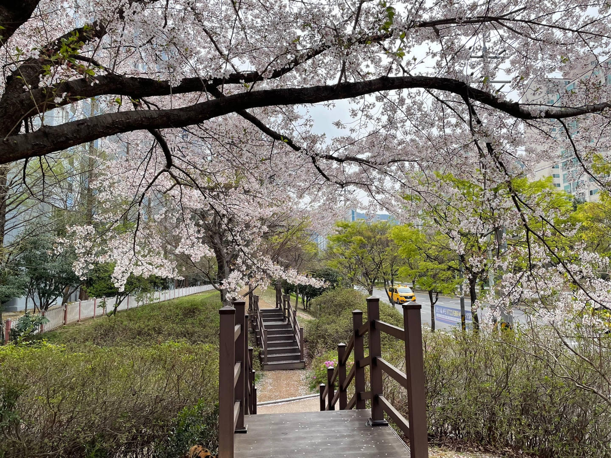
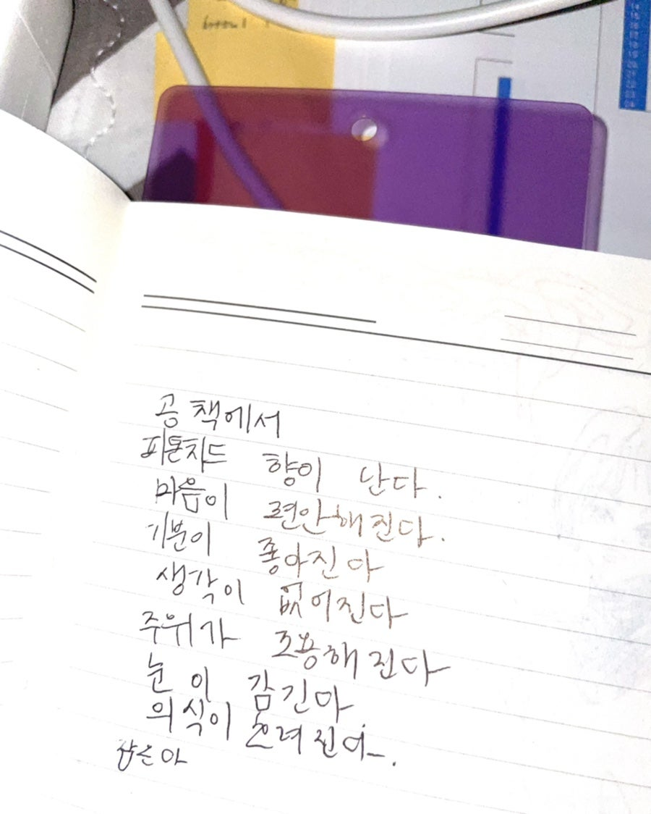

2021.04
학교 마치고 광안리 가서 바다 봤었던 사진
아직 4월 초였어서 그런가 바람이 엄청 불어서 얼굴 어는 줄 알았었음
바다 봐서 너무 좋았는데 진짜 얼굴이 찢어질 것 같아서 5분도 안 돼서
집 갔었다ㅎㅎ
✩✩✩✩✩✩✩✩✩✩✩✩✩✩✩✩✩✩✩✩✩✩✩✩✩✩✩✩✩✩✩✩✩✩✩✩✩✩✩✩✩✩✩✩✩✩✩✩✩✩✩✩✩✩✩✩✩✩✩✩✩✩✩✩✩✩✩✩✩✩✩✩✩✩✩✩
 |
2020.04
아파트 지름길 쪽에 벚꽃이 진짜 많이 폈길래 찍었던 사진 |
|
2021.04
광안리 바다 사진 |
|
 |
2022.04 우리집 주변 산책길에 벚꽃 사진 |
 |
2023.04 내가 진짜 볼때마다 이해할 수 없는 사진.. |